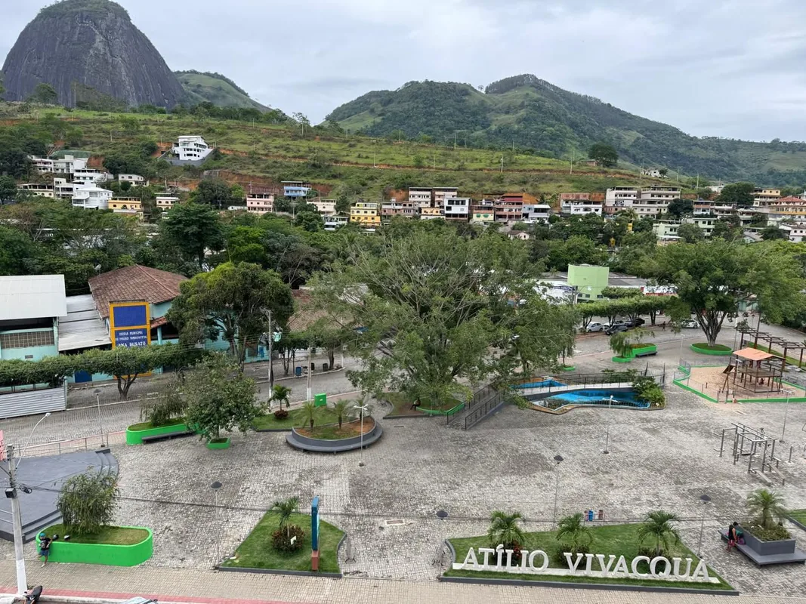
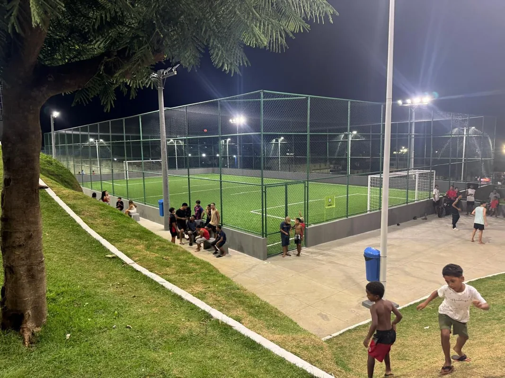

Soluções completas em engenharia civil para obras residenciais, comerciais e industriais.
Da infraestrutura urbana à construção civil, unimos planejamento, tecnologia e execução para entregar obras com segurança e performance.
Execução e gerenciamento de obras residenciais com foco em qualidade, prazo e segurança.
Saiba maisProjetos e obras para negócios e indústrias, com controle tecnológico em todas as etapas.
Saiba maisPavimentação, drenagem, loteamentos e urbanismo com foco em durabilidade e eficiência.
Saiba maisMontagem e manutenção industrial com foco em caldeiraria, tubulações e gerenciamento de obra. Aplicamos SSMA e controle de qualidade em todo o processo.

Pavimentação asfáltica, drenagem e galerias. Planejamento para reduzir impacto no trânsito e entregas dentro do prazo.
